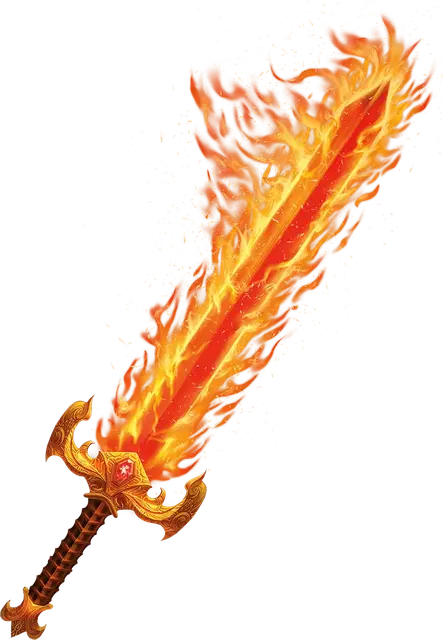

Язык пламени
Flame Tongue
Оружие (любое Рукопашное), редкое (требуется настройка)

Рекомендованная стоимость 4 000 ЗМ
Пока вы вооружены этим магическим оружием, Бонусным действием вы можете произнести команду, и тогда пламя объяст наносящую урон часть оружия. Это пламя испускает Яркий свет в радиусе 40 футов и Тусклый свет ещё на 40 футов. Пока пламя пылает, это оружие наносит 2к6 дополнительного урона Огнём при попадании. Пламя пылает, пока вы Бонусным действием не подадите команду снова или пока вы не бросите оружие, не накроете его или или не уберёте в ножны.